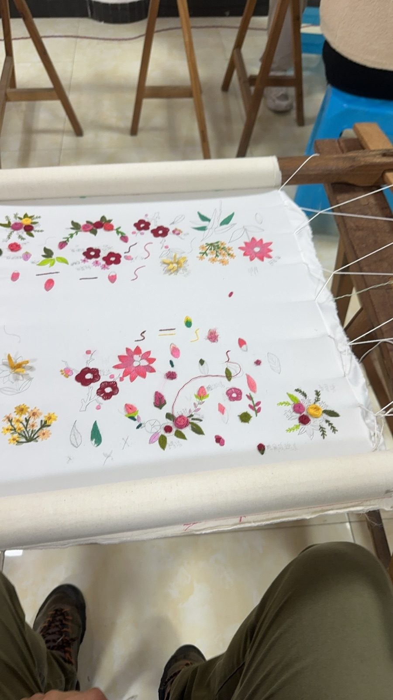
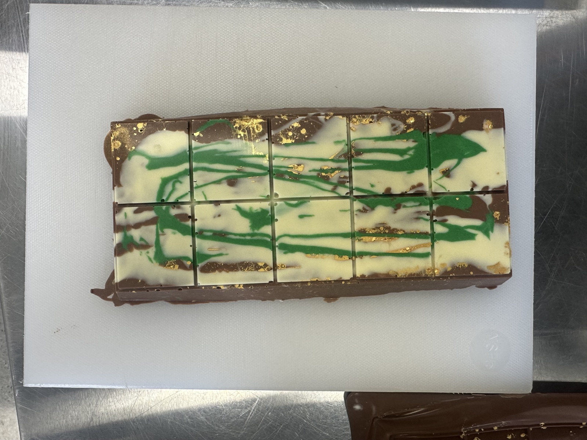

Web Design
Responsive websites and interfaces, hand-built with React, HTML, CSS and JavaScript.
React · JS · Figma
01 / About
I am completing a Graduate Diploma of Secondary Education at AUT, finishing October 2026. I came to teaching through four years as a multimedia specialist and five years tutoring design and technology at university level — so I teach students to think like designers and build like technologists.
My recent practicum at Kristin School had me teaching Digital Visual Communication and Digital Technology across Years 7–11 within IB frameworks — leading CAD modelling and 3D printing in Fusion 360, running graphic design and poster units, and designing inquiry-based projects that connect the design process to real-world contexts.
As a multimedia specialist at TAFE Queensland I built interactive, web-based 3D learning with React, Blender and Three.js, and worked with educators to turn curriculum into engaging digital content. Earlier, as a museum educator at the Long Museum in Shanghai, I organised learning events around contemporary exhibitions such as James Turrell.
I hold a Master of Information Technology in Interaction Design and a Bachelor of Choreography — a background that shapes how I approach visual storytelling and creative expression. I am fluent in Mandarin and English.
02 / Teaching & industry
Planned and delivered Design & Visual Communication and Digital Technology for Years 7–11 through IB frameworks. Led CAD and 3D printing from concept to prototype in Fusion 360, and taught graphic design, layout and typography.
Designed and built interactive online educational resources — including immersive web-based 3D learning — with React, Blender and Three.js. Applied HCI, UX and motion design to vocational materials, and produced print collateral for educational events.
Tutored undergraduate and postgraduate students across six design and technology courses: Web Design, Graphic Design, Digital Prototyping & Extended Reality, Human–Computer Interaction, and Design Computing Studios (Interactive & Build).
Deliver Cambridge English programmes (KET, PET, FCE) to learners aged 7–15 from Mandarin-speaking backgrounds.
Organised education events for school and public audiences, developing programming around contemporary works such as James Turrell, and cultivating visual literacy across diverse audiences.
Designed and ran school workshops encouraging girls from primary to secondary to explore STEM and build confidence through LEGO Robotics.
03 / A range of making — open a category to view projects
Responsive websites and interfaces, hand-built with React, HTML, CSS and JavaScript.
React · JS · FigmaPosters, campaigns and print layout led by typography and visual communication.
Illustrator · Photoshop
Interactive online resources and learner guides for school and vocational contexts.
HCI · UX · Three.jsCAD and 3D printing from concept to prototype in Fusion 360 and Blender.
Fusion 360 · BlenderInteractive experiences and learning games built in Unity with C#.
Unity · C#
Textile design and construction — material exploration and making in the workshop.
Materials · Making
Practical food technology — recipe development, nutrition and kitchen units.
Practical · NutritionMotion graphics and video editing for educational media.
After Effects · Premiere04 / Toolset
05 / Contact
Selected projects